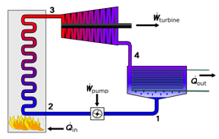
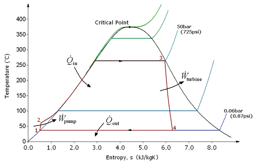
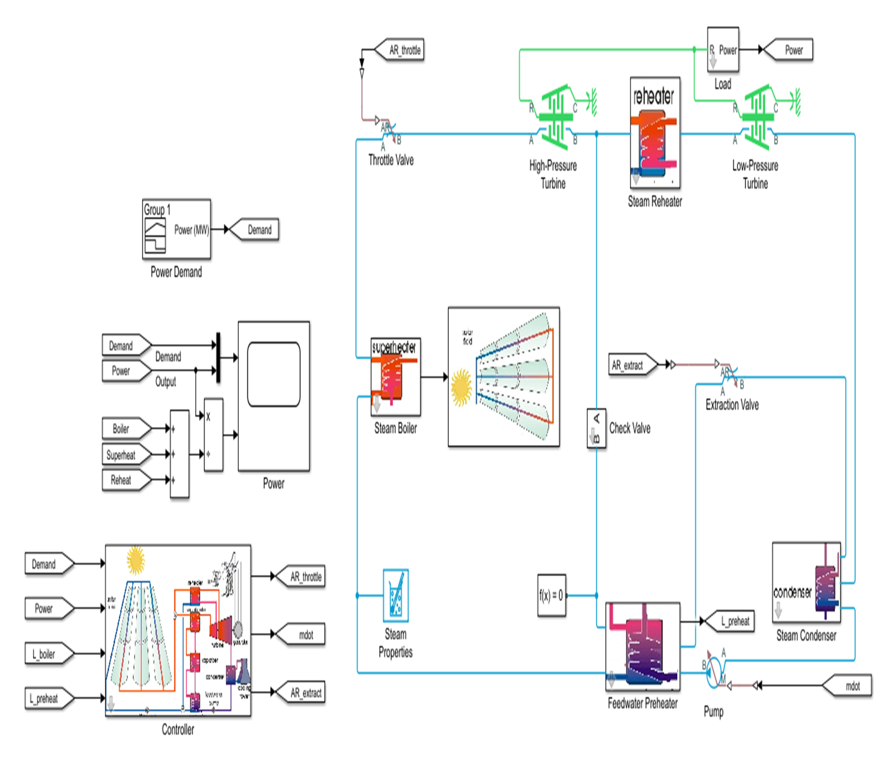
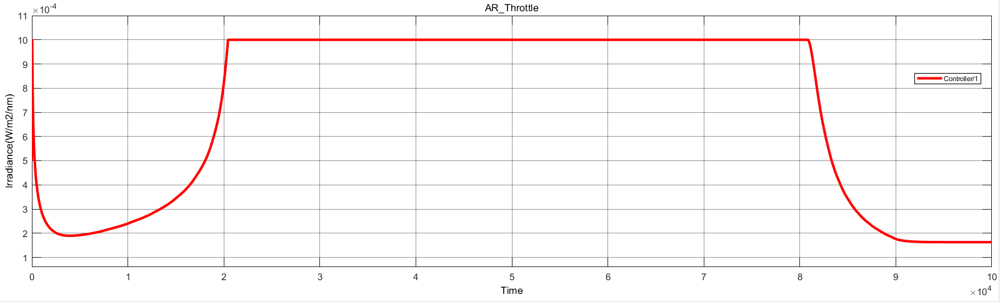
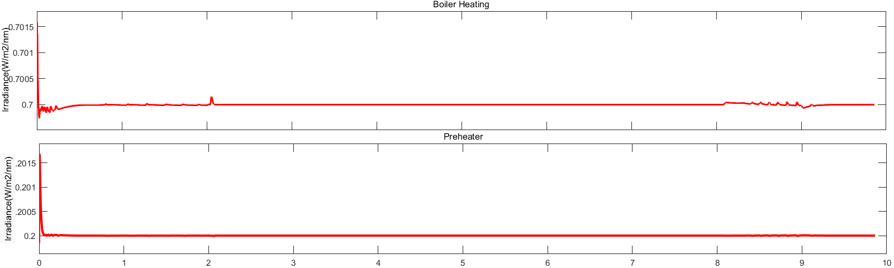
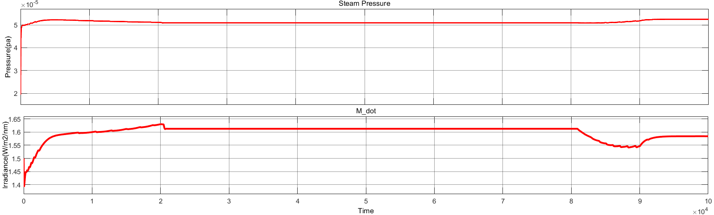
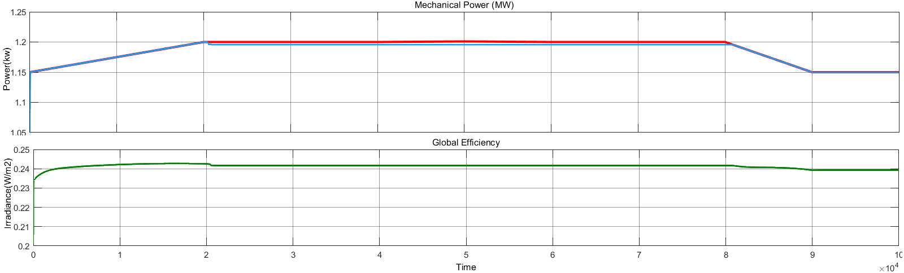
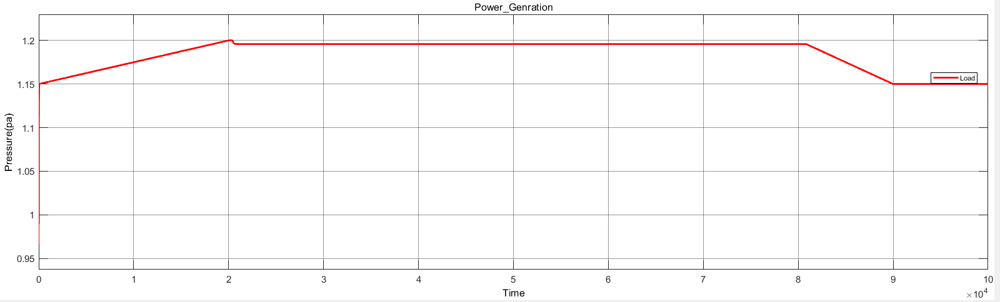

A MATLAB/Simulink study of a parabolic-trough solar thermal plant — built to quantify how irradiance, pressure, and load propagate through a physical system, and to read the correlations out of the resulting data.
Abstract — Concentrating solar power plants are usually described qualitatively: mirrors focus sunlight, a fluid heats up, a turbine spins. This project replaces that description with a working numerical model, then treats the model's output as a dataset: irradiance, mass flow, steam pressure, mechanical power, and efficiency logged over a full run and examined pairwise for how strongly and how quickly one drives the other.
A parabolic-trough plant concentrates sunlight onto a receiver tube, heats a working fluid, and drives a steam turbine. Rather than take that description on faith, this project encodes it as a set of coupled differential and algebraic equations in MATLAB/Simulink — a solar collector field, thermal storage, a two-stage turbine with reheat, and a closed feedwater loop — and runs it forward in time under a changing irradiance profile and a stepped power demand.
The point of building the model wasn't the model itself. It was what came after: extracting the simulated time-series and asking which variables move together, by how much, and why.


Every chart in the next section is read directly off this model. Each block is a physical component with its own governing equations — pressure–flow relationships in the throttle valve, energy balances in the preheater, momentum balance across the turbines — wired together into one closed-loop system with a controller regulating throttle and extraction valves against power demand.

Closed-form estimates of CSP output rely on steady-state assumptions that hide how the plant actually behaves under a moving irradiance profile and a changing load. Simulating the full model exposes transients — how long it takes steam pressure to settle after a demand step, how sensitive mechanical power is to a dip in irradiance — that a back-of-envelope calculation cannot.
Time-series for irradiance, mass flow rate, steam pressure, mechanical power, and global efficiency, logged across a full simulated cycle. These are the raw series analysed in the results section — the project's actual dataset.
Five signals were logged across the run and compared pairwise. Each plot below is a relationship between two physical quantities — the same kind of question a data analyst asks of any time-series: does one variable predict the other, and how does the system respond when an input changes?

The controller widens the throttle opening as demand rises and narrows it as demand falls, with a smooth transient in between — evidence the control loop is stable rather than oscillating.

Both stages settle to a stable operating band after an initial transient, showing the thermal storage is absorbing short-term irradiance fluctuation rather than passing it straight through.

Steam pressure and mass flow rate rise and fall together as irradiance changes, holding a steady plateau while irradiance is constant — the clearest single-variable relationship in the dataset, and the one the report's correlation analysis is built around.

Efficiency rises with mechanical power output up to a plateau around 24%, then eases off — a diminishing-returns pattern typical of turbine systems operating away from their design point.

Generated power follows the stepped demand curve (1.15 → 1.20 → 1.15 MW) with a short ramp, confirming the plant model responds proportionally rather than lagging or overshooting.
The point of the project was never just to get a Simulink model running. It was to see whether the numbers coming out of it told a coherent, physically sensible story — and to get comfortable pulling that story out of raw simulation data.